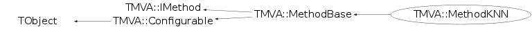

class TMVA::MethodKNN: public TMVA::MethodBase
MethodKNN Analysis of k-nearest neighbor
Function Members (Methods)
public:
protected:
private:
| virtual void | DeclareCompatibilityOptions() |
| virtual void | DeclareOptions() |
| Double_t | GausKernel(const TMVA::kNN::Event& event_knn, const TMVA::kNN::Event& event, const vector<Double_t>& svec) const |
| Double_t | getKernelRadius(const list<pair<const TMVA::kNN::Node<TMVA::kNN::Event>*,float>,allocator<pair<const TMVA::kNN::Node<TMVA::kNN::Event>*,float> > >& rlist) const |
| double | getLDAValue(const list<pair<const TMVA::kNN::Node<TMVA::kNN::Event>*,float>,allocator<pair<const TMVA::kNN::Node<TMVA::kNN::Event>*,float> > >& rlist, const TMVA::kNN::Event& event_knn) |
| const vector<Double_t> | getRMS(const list<pair<const TMVA::kNN::Node<TMVA::kNN::Event>*,float>,allocator<pair<const TMVA::kNN::Node<TMVA::kNN::Event>*,float> > >& rlist, const TMVA::kNN::Event& event_knn) const |
| virtual void | Init() |
| void | MakeKNN() |
| Double_t | PolnKernel(Double_t value) const |
| virtual void | ProcessOptions() |
Data Members
public:
| enum TMVA::MethodBase::EWeightFileType { | kROOT | |
| kTEXT | ||
| }; | ||
| enum TObject::EStatusBits { | kCanDelete | |
| kMustCleanup | ||
| kObjInCanvas | ||
| kIsReferenced | ||
| kHasUUID | ||
| kCannotPick | ||
| kNoContextMenu | ||
| kInvalidObject | ||
| }; | ||
| enum TObject::[unnamed] { | kIsOnHeap | |
| kNotDeleted | ||
| kZombie | ||
| kBitMask | ||
| kSingleKey | ||
| kOverwrite | ||
| kWriteDelete | ||
| }; |
public:
| Bool_t | TMVA::MethodBase::fSetupCompleted | is method setup |
| const TMVA::Event* | TMVA::MethodBase::fTmpEvent | ! temporary event when testing on a different DataSet than the own one |
protected:
| TMVA::Types::EAnalysisType | TMVA::MethodBase::fAnalysisType | method-mode : true --> regression, false --> classification |
| UInt_t | TMVA::MethodBase::fBackgroundClass | index of the Background-class |
| vector<TString>* | TMVA::MethodBase::fInputVars | vector of input variables used in MVA |
| vector<Float_t>* | TMVA::MethodBase::fMulticlassReturnVal | holds the return-values for the multiclass classification |
| Int_t | TMVA::MethodBase::fNbins | number of bins in input variable histograms |
| Int_t | TMVA::MethodBase::fNbinsH | number of bins in evaluation histograms |
| Int_t | TMVA::MethodBase::fNbinsMVAoutput | number of bins in MVA output histograms |
| TMVA::Ranking* | TMVA::MethodBase::fRanking | pointer to ranking object (created by derived classifiers) |
| vector<Float_t>* | TMVA::MethodBase::fRegressionReturnVal | holds the return-values for the regression |
| UInt_t | TMVA::MethodBase::fSignalClass | index of the Signal-class |
private:
| Int_t | fBalanceDepth | number of binary tree levels used for balancing tree |
| vector<TMVA::kNN::Event,allocator<TMVA::kNN::Event> > | fEvent | ! (untouched) events used for learning |
| TString | fKernel | ="Gaus","Poln" - kernel type for smoothing |
| TMVA::LDA | fLDA | ! Experimental feature for local knn analysis |
| TMVA::kNN::ModulekNN* | fModule | ! module where all work is done |
| Float_t | fScaleFrac | fraction of events used to compute variable width |
| Float_t | fSigmaFact | scale factor for Gaussian sigma in Gaus. kernel |
| Double_t | fSumOfWeightsB | sum-of-weights for background training events |
| Double_t | fSumOfWeightsS | sum-of-weights for signal training events |
| Int_t | fTreeOptDepth | number of binary tree levels used for optimization |
| Bool_t | fTrim | set equal number of signal and background events |
| Bool_t | fUseKernel | use polynomial kernel weight function |
| Bool_t | fUseLDA | use local linear discriminat analysis to compute MVA |
| Bool_t | fUseWeight | use weights to count kNN |
| Int_t | fnkNN | number of k-nearest neighbors |
Class Charts
{kind=link}
{kind=link}
{kind=link}
{kind=link}

Function documentation
MethodKNN(const TString& jobName, const TString& methodTitle, TMVA::DataSetInfo& theData, const TString& theOption = "KNN", TDirectory* theTargetDir = NULL)
standard constructor
MethodKNN(TMVA::DataSetInfo& theData, const TString& theWeightFile, TDirectory* theTargetDir = NULL)
constructor from weight file
void DeclareCompatibilityOptions()
Bool_t HasAnalysisType(TMVA::Types::EAnalysisType type, UInt_t numberClasses, UInt_t numberTargets)
FDA can handle classification with 2 classes and regression with one regression-target
const std::vector< Float_t >& GetRegressionValues()
Return vector of averages for target values of k-nearest neighbors. Use own copy of the regression vector, I do not like using a pointer to vector.
void ReadWeightsFromXML(void* wghtnode)
void GetHelpMessage() const
get help message text
typical length of text line:
"|--------------------------------------------------------------|"
Double_t GausKernel(const TMVA::kNN::Event& event_knn, const TMVA::kNN::Event& event, const vector<Double_t>& svec) const
Gaussian kernel
Double_t getKernelRadius(const list<pair<const TMVA::kNN::Node<TMVA::kNN::Event>*,float>,allocator<pair<const TMVA::kNN::Node<TMVA::kNN::Event>*,float> > >& rlist) const
Get polynomial kernel radius
const std::vector<Double_t> getRMS(const list<pair<const TMVA::kNN::Node<TMVA::kNN::Event>*,float>,allocator<pair<const TMVA::kNN::Node<TMVA::kNN::Event>*,float> > >& rlist, const TMVA::kNN::Event& event_knn) const
Get polynomial kernel radius
Double_t getLDAValue(const list<pair<const TMVA::kNN::Node<TMVA::kNN::Event>*,float>,allocator<pair<const TMVA::kNN::Node<TMVA::kNN::Event>*,float> > >& rlist, const TMVA::kNN::Event& event_knn)